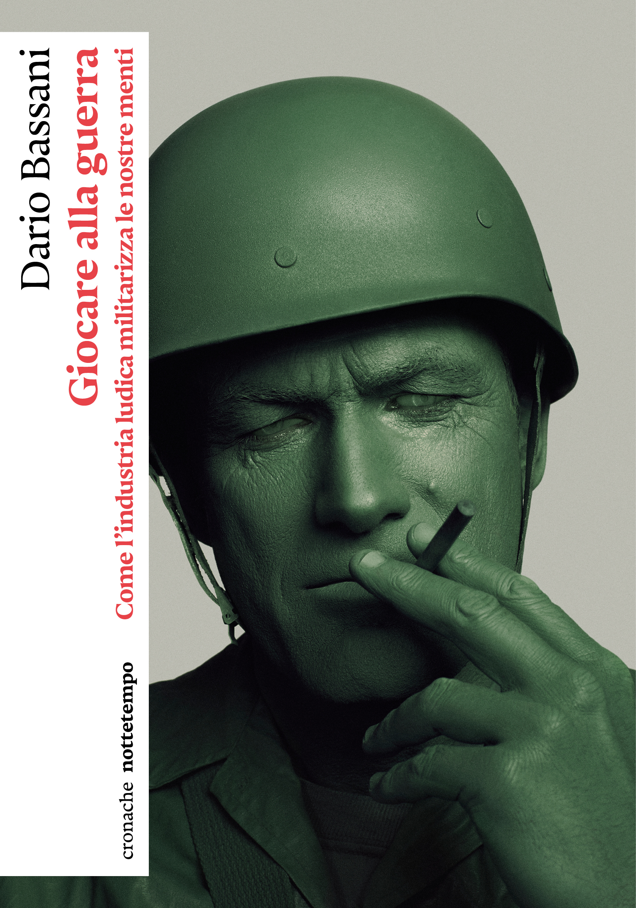

Dicono di lui
«Uno dei libri più intelligenti e interessanti che mi siano capitati per le mani di questi tempi.»
«Un'approfondita e documentata panoramica delle intersezioni tra gioco e guerra.»
«Uno sguardo particolarmente acuto sul presente.»
«Un lavoro originale e documentatissimo.»

Giocare alla guerra
Come l'industria ludica militarizza le nostre menti
lo compri quaOggi i nerd dominano i campi di battaglia e i joystick spesso e volentieri rimpiazzano i fucili. Ma come è nato il macabro intreccio di violenza e intrattenimento che accomuna le guerre contemporanee e i videogame?
Non è certo un connubio inedito: tra i giochi militari ottocenteschi, Dungeons & Dragons e i simulatori nucleari della Guerra Fredda c'è un legame profondo, che arriva fino a popolarissimi sparatutto odierni come Call of Duty. Le guerre reali si trasformano in spettacoli da consumare. Perché giocare non è mai stato un atto innocente: da secoli, il mondo ludico è al servizio degli imperi e addestra la popolazione alla logica del conflitto. La cronaca recente ci permette di vedere l'inarrestabile dispiegarsi di questa forza: in Russia e Ucraina si reclutano videogiocatori per pilotare droni e a Gaza l'industria militare-digitale usa intelligenze artificiali progettate per uccidere. Tutte tecnologie in mano a grandi aziende – spesso con nomi dal sapore tolkieniano – capeggiate da accaniti gamer che ora sussurrano all'orecchio delle potenze mondiali e raccolgono ricchissimi contratti.
In questo saggio acuto e acuminato, pieno di storie e sorprese, Dario Bassani racconta come siamo arrivati qui, e denuncia il potere che hanno i giochi di normalizzare l'idea di una guerra senza fine.
Ne hanno scritto e parlato
- la Repubblica Torino Francesco Guglieri
- U Repubblica Pietro Minto
- Avvenire Eugenio Giannetta
- Doppiozero Enrico Manera
- Sky TG24 Agnese Rinaldi
- RSI Rete Due, Alphaville Francesca Rodesino · Sandra Sain
- minima&moralia Luca Todarello
- Snaporaz Marcello Conti
- La Provincia di Como Josette Elisa Bonomi
- Nuovo Quotidiano di Puglia Andrea Chironi
Ne ho anche parlato in pubblico
- 10 settembre 2026 Festivaletteratura Mantova, «Dominare»
- 17 settembre 2026 pordenonelegge Pordenone, con Tullio Avoledo
- 26 settembre 2026 Festival del Pensare Contemporaneo Piacenza, «Le nostre teste bombardate» con Serena Mazzini
- 10 ottobre 2026 Festival di Pandora Rivista Bologna, con Federico Petroni